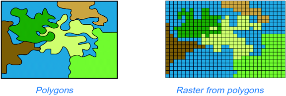
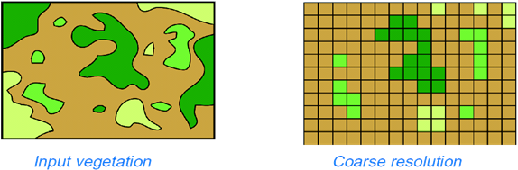

Data models
Data models
GIS commonly uses two “big” data models:
- Vector: discrete features (points/lines/polygons) with attributes.
- Raster: a grid of cells (pixels), where each cell stores a value (category or measurement).
Both can represent the same phenomenon — but they support different kinds of analysis.
Vector → raster
When we “rasterize” polygons, features become a grid. The result depends on cell size (resolution) and how boundaries are handled.
Resolution matters
Coarser cells generalize the pattern. Finer cells capture more detail but increase storage and processing time.
When raster is a good fit
- Continuous surfaces: elevation, temperature, pollution, density.
- Image data: aerial/satellite imagery (multiple bands).
- Fast overlay math: suitability models, map algebra, cost distance.